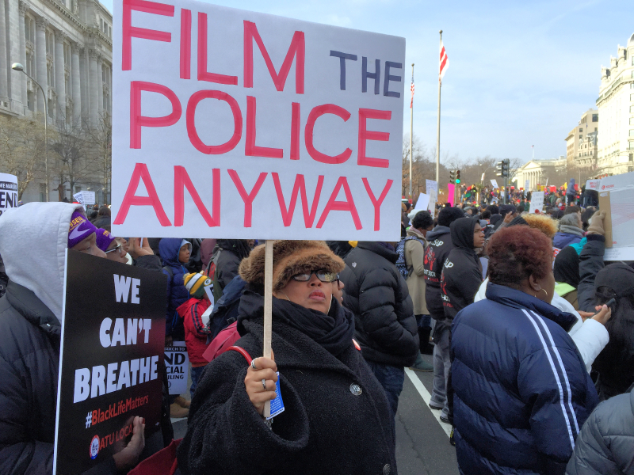

A law school professor and former criminal defense attorney tells you why you should never agree to be interviewed by the police. This 48 minute video is one everyone should see at least once. It explains in detail how even those who are completely innocent can be unwittingly trapped into self incrimination by agreeing to speak to law enforcement. Some of our volunteers watch this every few months to make sure the information is fresh. It is well worth an hour of your time.
Flex Your Rights" first DVD, BUSTED has become a cult classic. Humor and helpful tips combine to make this video a must-see for freedom lovers everywhere. Created by Flex Your Rights and narrated by retired ACLU director Ira Glasser, BUSTED realistically depicts the pressure and confusion of common police encounters.
In an entertaining and revealing manner, BUSTED illustrates the right and wrong ways to handle common police encounters and pays special attention to demonstrating how you, the viewer, can confidently protect your rights and yourself. (Feature Run Time: 40 min.)
The latest DVD from Flex Your Rights, 10 Rules is a fast-paced and powerful know-your-rights resource. Ideal for high school and college audiences -- 10 Rules helps create more confident and intelligent citizens. An excellent companion to BUSTED, together they provide examples of the right and wrong way to assert one's civil rights.
This is part one of a short two part video, further explaining why it's important to assert your right to remain silent when confronted by law enforcement. Short and sweet, this is a good alternative when one doesn't have the time for the longer videos above.
Part two of the "Don't talk to cops" video, from the Street Smart series.
What Everyone MUST know about Jury Duty! Published on Mar 27, 2015
Gavin Seim is a public speaker with a message of Bold Liberty and principled defiance of tyranny. A past candidate for US Congress as well as an author of the Declaration of Affirmation, Gav believes in going toe to toe against tyrants. In 2014 he founded the I WILL NOT COMPLY movement in WA State, organizing the largest Felony civil disobedience in US history. He appears on radio and TV programs and is renown for his principled but tenacious activism like pulling over police and standing up to corrupt judges, even as he records videos that educate in liberty.
Gavin is a small business owner, a Christian and a father. He believes in American values and that liberty is not the fringe, but the foundation. If we do not stand, liberty will perish.
I confess. I made this sign as “conversation bait” to engage attendees at last week’s National March Against Police Violence. (I’m a monster.) But in my defense, these conversations were research for a new project I’m developing that’s connected to the sign itself.

So I asked people this question: “Why do you think most instances of ordinary police abuse go unreported?” Their answers fell into two major categories.
Answer #1: People think the police will simply ignore their reports. Some had experienced the frustration of receiving no official follow-up after filing their own reports. The general sense is “Police don’t police the police. What’s the point of wasting your time?”
Answer #2: Fear. There’s no getting around it. People fear being further victimized by police intimidation and perhaps retaliation. They fear the pain of reliving a terrible experience over and over again.
It’s difficult to hold bad police accountable when people are afraid to report them. But it’s practically impossible when the brave few who do report them are ignored. We can and must do better.
That’s why Flex Your Rights is building Right to Record (R2R): the most trusted and user-friendly online police misconduct reporting service in the United States. I invite you to download our PDF one-page plan by following this link.